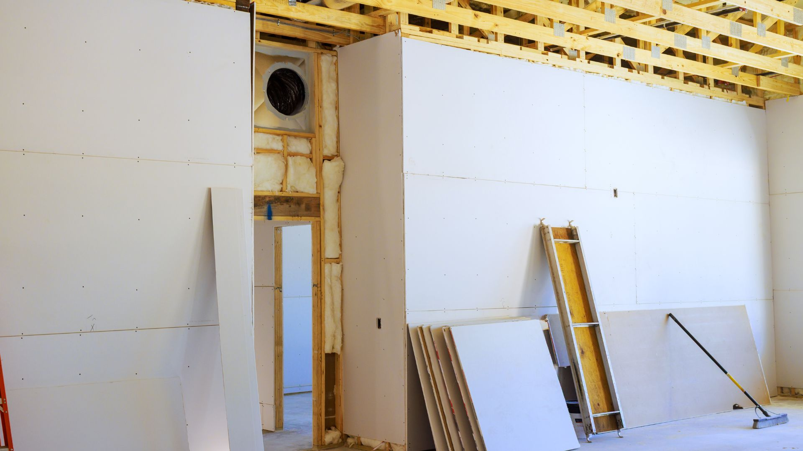

Sourcing opportunities across selected building, improvement, and material-related categories in Latin America.
Latin America offers relevant sourcing opportunities across selected building, improvement, and material supply environments.
For institutional buyers, these opportunities may be especially relevant where supplier diversification, product development, cost-structure evaluation, or stronger sourcing discipline are part of the commercial objective.
Index-IBL approaches this universe as a strategic sourcing environment where better manufacturer selection, closer requirement alignment, and stronger execution support can improve the sourcing outcome.

The opportunity landscape
- wood-related supply
- building-material-related supply
- improvement-oriented product environments
- selected material and component opportunities linked to construction and installation contexts
The exact opportunity set depends on the buyer’s sourcing objectives, technical requirements, commercial realities, and supply expectations.
For buyers evaluating this universe, the key question is which opportunities justify a more structured sourcing program and which manufacturers can support those requirements with consistency, fit, and reliable execution over time.
How Index-IBL supports buyers in this universe
In building, improvement, and material-related sourcing programs, buyers often need support in identifying suitable manufacturers, evaluating fit, aligning requirements, and maintaining coordination across the process.
- supplier identification across selected Latin American markets
- qualification aligned with buyer requirements
- specification and requirement alignment
- QA/QC coordination
- production follow-up
- supply-chain coordination
- support for long-term supplier suitability
This helps buyers approach opportunities in a more structured and reliable way.
Why discipline matters in this category universe
Building, improvement, and material-related sourcing programs often depend on consistency, requirement alignment, execution follow-up, and dependable manufacturer relationships.
- disciplined supplier qualification
- sourcing governance shaped by buyer requirements
- commercially and operationally suitable supplier selection
- coordinated execution across the sourcing process
- long-term program reliability
Selective opportunity focus
Index-IBL uses this category universe to help buyers focus on sourcing opportunities that are commercially relevant and operationally workable.
The goal is to support better decisions, stronger manufacturer fit, and a more grounded commercial discussion around next-step possibilities.
Discuss opportunities in Building, Improvement & Material Supply
If your company is evaluating sourcing possibilities in this category universe, Index-IBL is available to discuss supplier fit, qualification needs, and next-step opportunities.